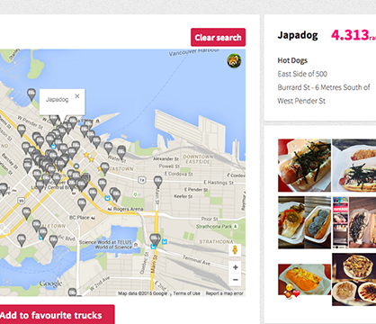
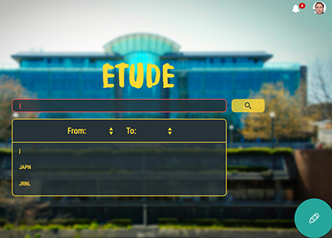
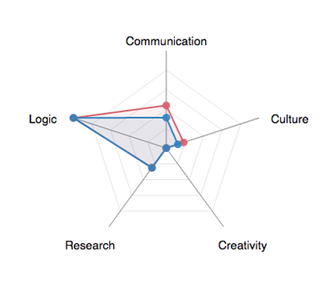
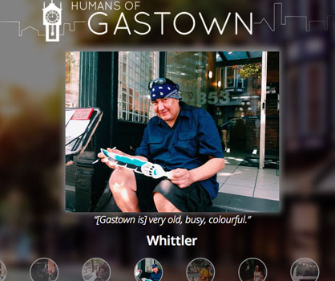
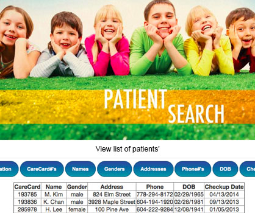
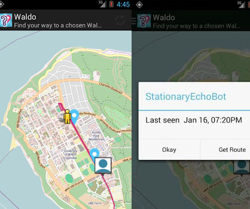

Projects
-

Meals on Wheels » Django/Python, JavaScript
• Parsed food truck data from City of Vancouver and plotted their locations on a map
• Users can register, login, and change their profile settings
• View Instagram photos associated with each food truck
• Users can rate food trucks; recommendation system based on users' ratings
• Food trucks searches can be filtered by name, type of food, and radius with specified address
View Live Site »
View on GitHub » -

Etude » UX/UI Design, JavaScript/jQuery
• Web application prototype that would allow undergraduate UBC students to search, create, and join study sessions
• Ran field studies with 16 participants using questionnaires and interviews
• Conducted usability tests with 8 participants through video-recorded observations and interviews
• Ran statistical analysis on the user data using paired t-tests in R
View Live Site » -

Electives Explorer » UX/UI Design, JavaScript/jQuery
• Medium fidelity prototype that supports users in choosing electives based on their interests and skills
• Conducted usability testing with 10 users; semi-structured interviews and video-recorded observations
• Prototype allows users to search for electives; encourages users to search based on their skill profile
• Prototype gives users the ability to preview how a given course will affect their skill profile
View Live Site »
Video Overview » -

Humans of Gastown » UI/UX Design
• Designed website's header and icons using Photoshop CS6
• Interviewed clients (Gastown Business Improvement Society) and worked within a team of four towards a project that could potentially enhance businesses in Gastown
• Conducted user research with 29 participants (15 oral interviews, 14 online survey takers)
• Promoted the project and recruited 15 participants as the initial "Humans of Gastown" (participants' photos and quotes)
• Designed paper prototypes for the UI
• Presented project in a 15 min. demo in front of approx. 30 people
View on GitHub » -

Clinic Database » SQL, PHP, HTML, CSS
• Clinic website with three unique UIs and privileges for doctors, receptionists, and patients
• Wrote SQL queries for selecting/projecting, joining, dividing, aggregating, as well as SQL operations to update, insert, delete information from database
• GUI made with PHP, HTML and CSS (Bootstrap framework) with a navigation drop-down bar, login, checks for valid user inputs, and a map using Google Map API
• Collaborated in a group of four through Github; presented the website through demo
View on GitHub » -

Friend Finder: Android Application » Java
• Parsed live data from Translink service presented in XML and JSON format
• Used GPS to track users within a geographical area and plotted locations of users on a map
• Used live bus information from Translink to determine best bus routes and plotted them on map
• Implemented a messaging dialogue that allowed users to send and receive messages
• Wrote a robust implementation with appropriate exceptions thrown; created JUnit tests
• Developed application using emulator and Android device; presented the project through demo